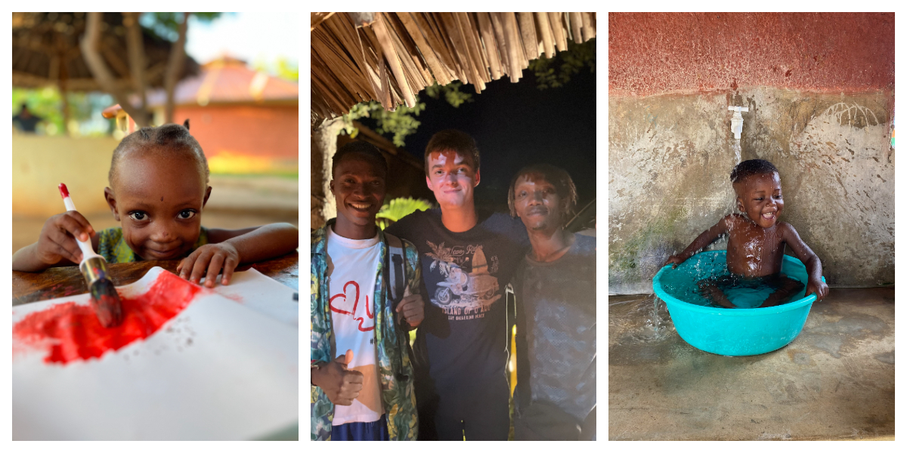

| Datum | Titel | Omschrijving |
|---|---|---|
| Opleiding | ||
| 2017 - 2024 | Heilige Familie Ieper | Informaticabeheer |
| 2024 - ....... | Vives Kortrijk | Bachelor in de toegepaste informatica |
| 2024 - 2025 (voorzien) | Syntra West | Beleggingsadviseur avondschool |
| Werk | ||
| 2020 - 2021 | Speelpleinwerking Moorslede & Dadizele | Animator |
| 2021 - 2023 | Speelpleinwerking Moorslede & Dadizele | Hoofd-Animator |
| 2023 - ....... | Speelpleinwerking Moorslede & Dadizele | Pleinverantwoordelijke |
| 2023 - ...... | RTS Voice Data Video Communication | Student Service / Configuration Engineer |
Ik ben Ian-Thomas EVERAERTS, 18 jaar en woonachtig te Ieper. Informatica en Technologie fascineren mij. Mijn interesse omvat zowel het programmeren, het installeren en configureren van een (bescheiden) netwerkomgeving als het installeren van camera-bewaking. Mijn fascinatie voor de informatica-wereld is dan ook heel ruim. Wanneer ik eens niét achter de PC te vinden ben, kan ik te vinden zijn op de Speelpleinwerking, waar ik tijdens bepaalde schoolvakanties als gebrevetteerde monitor aan de slag ben om kinderen tussen 6 en 12 jaar (hopelijk) een geslaagde dag te bezorgen met uiteenlopende activiteiten. Dit kan variëren van een zelf uitgewerkte mini-versie van 'De Mol' tot een namiddag donuts bakken en versieren.
